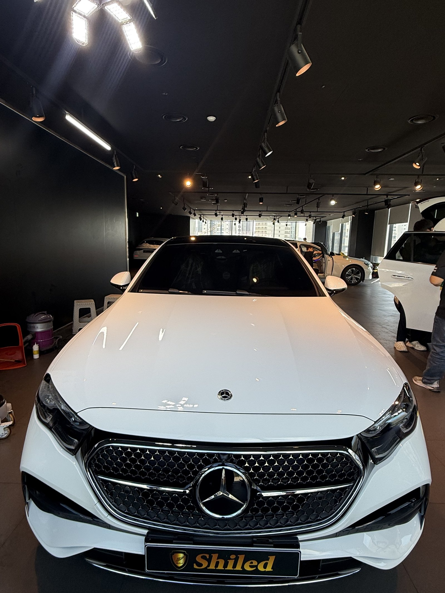
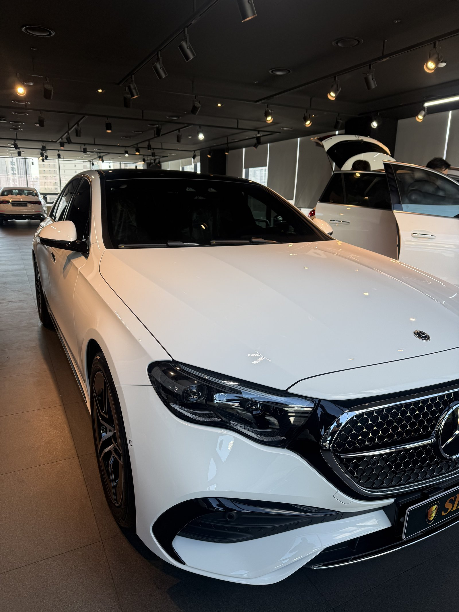
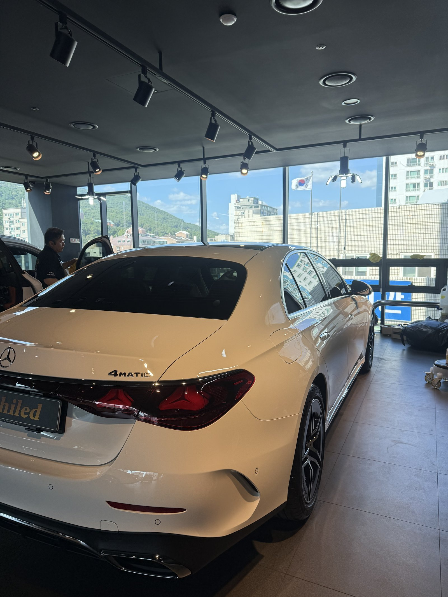
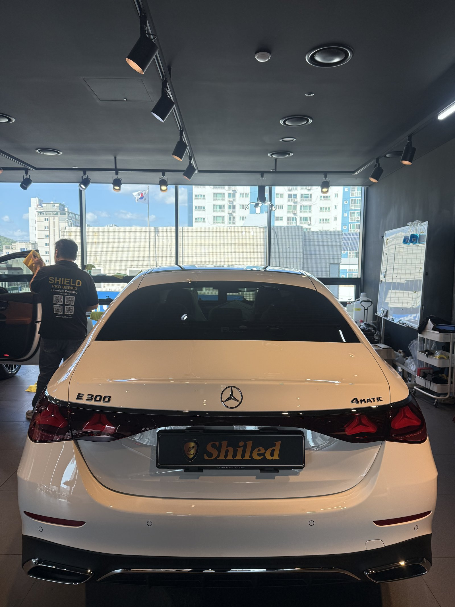
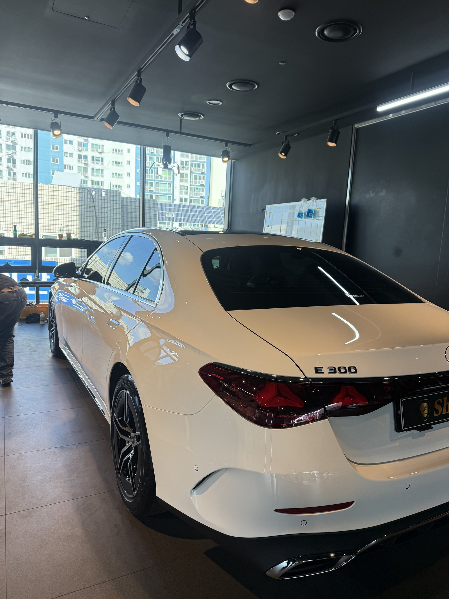
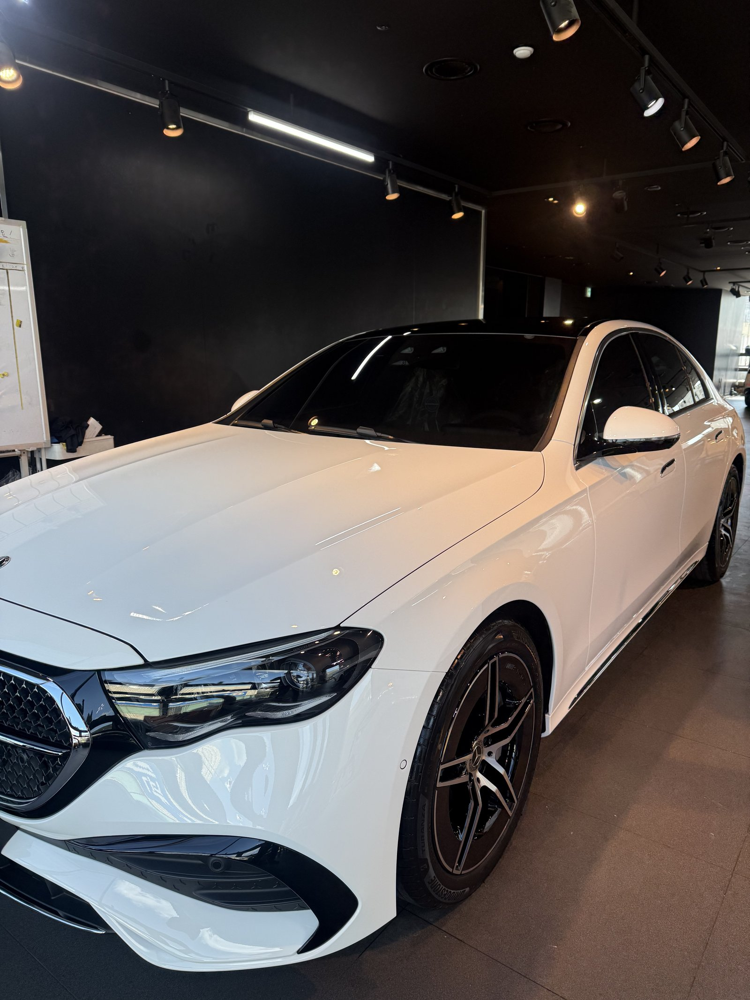
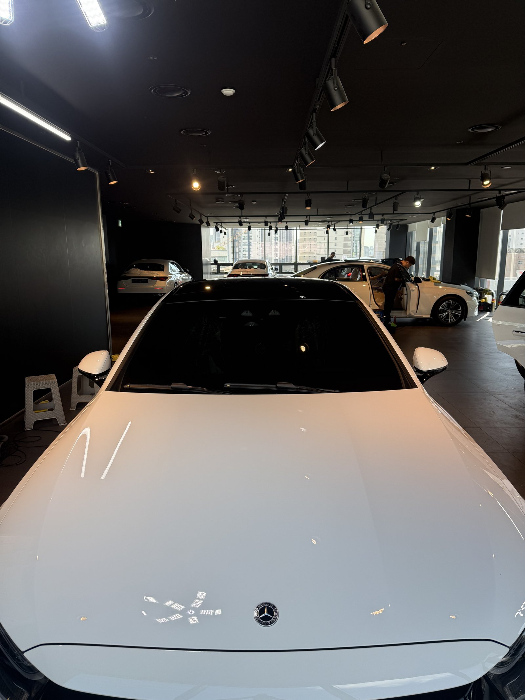
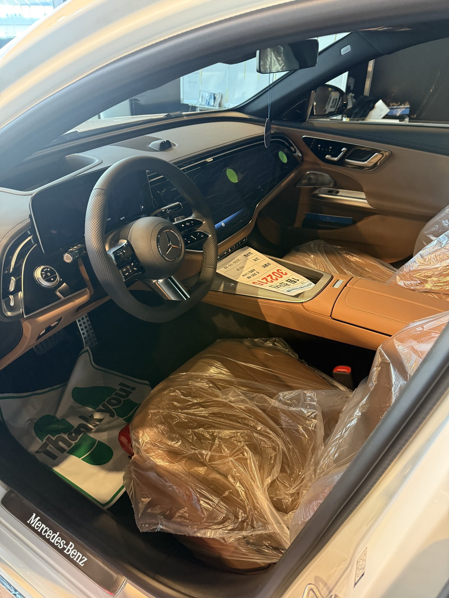
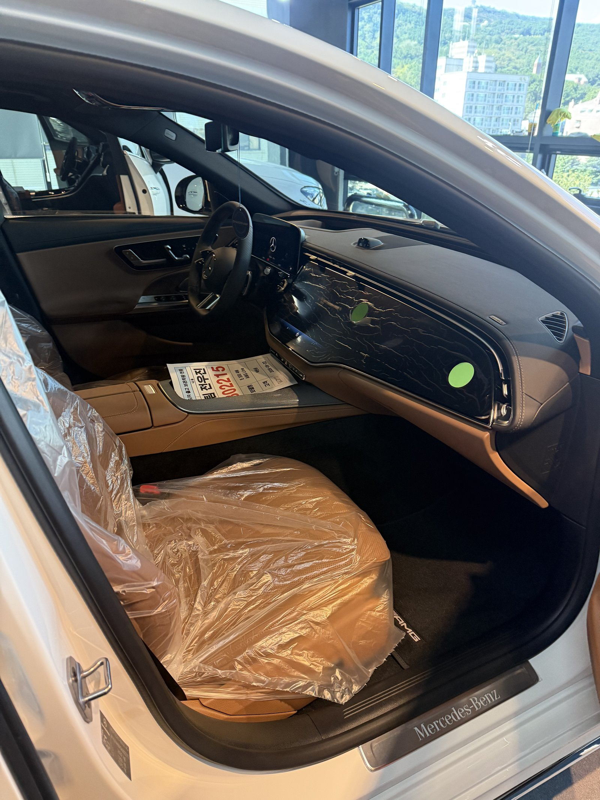
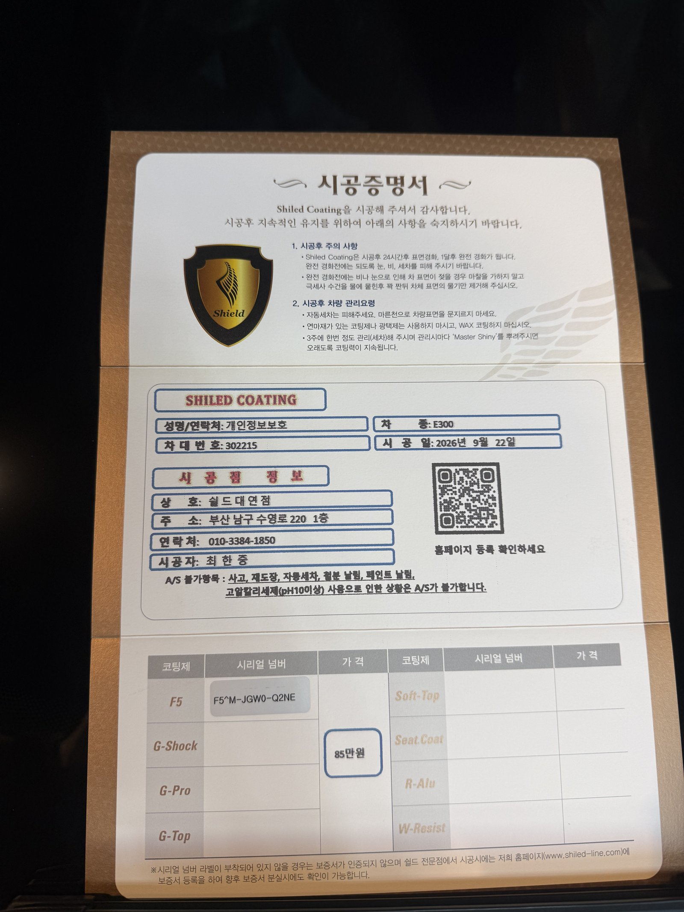

벤츠 E300 4MATIC 백색입니다.
아직 번호판도 달기 전, 출고 대기 중인 새 차입니다.
이 차는 출고 전에 F5 부산 유리막코팅으로 진행했습니다.

흰색 신차는 왜 밋밋해 보일까요?
흰색은 빛을 고르게 튕겨내는 색입니다.
그래서 조명 아래서 곡면의 경계가 흐려지고, 평평한 판처럼 보이기 쉽습니다.
E클래스처럼 보닛과 펜더 라인이 길게 흐르는 차는 이 차이가 더 크게 납니다.


그래서 F5를 올렸습니다
F5는 색감의 깊이를 끌어올리는 코팅입니다.
흰색 위에 올리면 표면에 얇은 유리층이 생기고, 반사가 또렷해집니다.
사진에서 보닛 위로 맺힌 조명 줄이 끊기지 않고 이어지는 게 그 차이입니다.
코팅제는 대표가 화학공학 전공으로 직접 개발·제조한 제품입니다.

기술자의 팁
흰색 신차는 오염이 눈에 잘 안 띄어서 전처리를 건너뛰기 쉽습니다. 하지만 운송 중 묻은 미세 오염은 색과 상관없이 붙어 있습니다. 디테일링 세차와 탈지로 바탕을 정리한 뒤에 코팅을 올립니다.



실내는 출고 전 그대로 지킵니다
출고 전 차량은 안팎 컨디션을 함께 챙깁니다.
실내는 시트 보호 비닐이 씌워진 신차 상태 그대로입니다. 외부는 F5로 광을 잡고, 인도까지 깨끗한 상태로 관리합니다.


시공증명서를 함께 드립니다
모든 시공 차량에 시공증명서를 드립니다.
차종·시공일·코팅제 시리얼 번호가 적혀 있고, 홈페이지에 등록해 보증을 받으실 수 있습니다. 이 차는 F5 코팅으로 기록돼 있습니다.

차종·시공일·코팅제 시리얼이 기재된 시공증명서
자주 묻는 질문
Q. 흰색 신차도 유리막코팅이 필요한가요?
A. 필요합니다. 흰색은 오염이 덜 보일 뿐 덜 묻는 게 아닙니다. 코팅막이 있으면 물때와 오염이 도장에 바로 붙지 않아 세차가 훨씬 수월합니다.
Q. 흰색 차에 F5를 쓰는 이유가 뭔가요?
A. 흰색은 조명 아래서 평면적으로 보이기 쉽습니다. F5는 색감 깊이를 끌어올리는 코팅이라 반사가 또렷해지고 곡면의 입체감이 살아납니다.
Q. 왜 출고 전에 코팅하나요?
A. 도장면이 가장 깨끗할 때 올린 코팅이 가장 오래갑니다. 운행과 세차로 잔기스가 생기기 전에 입혀두는 것이 핵심입니다.
Q. 코팅 후 세차는 언제부터 하나요?
A. 코팅이 자리 잡을 시간이 필요하므로 시공 후 바로 강한 세차는 피하는 것이 좋습니다. 정확한 시점은 인도할 때 차량 상태에 맞춰 안내해 드립니다.
Q. 쉴드광택 위치와 예약은 어떻게 하나요?
A. 부산 남구 유엔로220 1F 쉴드광택입니다. 예약·상담은 010-3384-1850, 대표 최한중이 직접 상담하고 책임 시공합니다.
새 차일수록 시작점이 다릅니다. 가장 깨끗할 때 입혀두십시오.
제품을 직접 만드는 사람이 직접 시공합니다.
부산에서 신차 유리막코팅을 고민 중이시면 편하게 연락 주십시오.
어떤 차를 타냐보다 어떻게 타냐가 중요합니다~!
시공 중에는 전화를 받지 못할 때가 많습니다.
카카오톡으로 차종과 원하시는 시공을 남겨주시면 확인 후 답변드립니다.
쉴드광택 · 부산 남구 유엔로220 1F · 대표 최한중